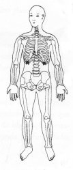
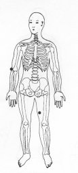

Travas de Segurança da Energia 14 - Segunda Profundidade
|
 |
TSE 14 ¬ Colocar as mãos sobre o peito na parte inferior da caixa torácica correspondente TSE 14. ou
M.e. sobre o dobra do cotovelo direito na direção do polegar TSE 19;
M.d. sobre a face interna da coxa esquerda TSE 1 alta .
|
 |
Notas:1 - M.d. = mão direita M.e. = mão esquerda.
2 - O texto sublinhado indica que pode ser feito usando alternadamente o lado
direito (mão direita) e depois o lado esquerdo (mão esquerda).
3 - Tocar a área indicada, com a ponta dos dedos da mão, durante
alguns minutos ou até sentir uma pulsação rítmica.
Não precisamos nos preocupar em demasia com a precisão da área
indicada, pois cada trava de segurança da energia tem uma abragência
de uns sete centímetros em torno de si.